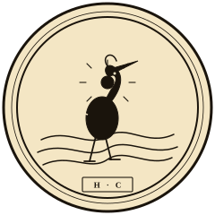

The Living Press at Victoria Harbour

The Harbour
Chronicle
Ink that holds the tide
The Living Press at Victoria Harbour
Colophon
The Harbour Chronicle is an independent digital broadsheet, first set in the year MMXXVI. It is an original work of typographic theatre: a rag-paper leaf whose plates can hold motion. It is not the organ of any government, studio, or other newspaper, and it does not borrow another paper’s name, crest, or type.
The press-mark is a harbour egret among typographic tide rings, with the motto Ink that holds the tide. The bird is a commonplace of these waters, not a messenger from any story but our own. What looks enchanted on the page — the letterpress bite, the moving plates, the vermillion seal of the harbour desk — is framing. The news itself is real.
On the news
Every headline, time, and fact on these leaves is taken from a public RSS feed or official open data. We write a short original precis from the public summary and title, then send the reader to the originating desk. We do not invent quotations, scores, deaths, or datelines, and we do not reprint copyrighted article bodies. Times are converted to Hong Kong Time and marked HKT. The harbour glass, when shown, is taken from the Hong Kong Observatory’s open data.
The snapshot of each edition is stored with the site and refreshed on a regular schedule. If a feed is silent, the last good leaf remains on the stone rather than a blank page.
On the living plates
When a plate moves, it is an official news video — typically an embed from a public YouTube channel of a recognised newsroom — restyled as a typographic impression: muted, looping, slightly grainy, with the ordinary player chrome put away. A small typographic control, “Sound off,” will let the plate speak. If you prefer less motion, the press will hold the plate still. Captions credit the originating channel, and a link leads to the official watch page.
Sources
This edition draws, as available, on public feeds and video channels from BBC News and BBC Sport, The Guardian, NPR, Al Jazeera, Hong Kong Free Press, South China Morning Post (headlines and short public summaries only), news.gov.hk, CNA, The Japan Times, Deutsche Welle, France 24, Reuters, the Associated Press, Sky News, and the Hong Kong Observatory. Their journalism remains theirs. We are a compositor, not a substitute.
Credits
Type: Cormorant Garamond, IM Fell English, Newsreader, Cinzel, Oswald, IBM Plex Mono, and Noto Serif TC, served by Google Fonts. Rag-paper textures and the press-mark were made for this edition. Feed photographs, when shown, remain the property of the originating publisher and are displayed with attribution; if a remote image fails, a typographic plate stands in its place.
A note from the registrar
This leaf is a made object, set to feel as if a harbour press had learned to hold moving pictures. It is offered as a newspaper first. For corrections of fact, consult the original dispatch, which is always linked, and prefer it over our precis.